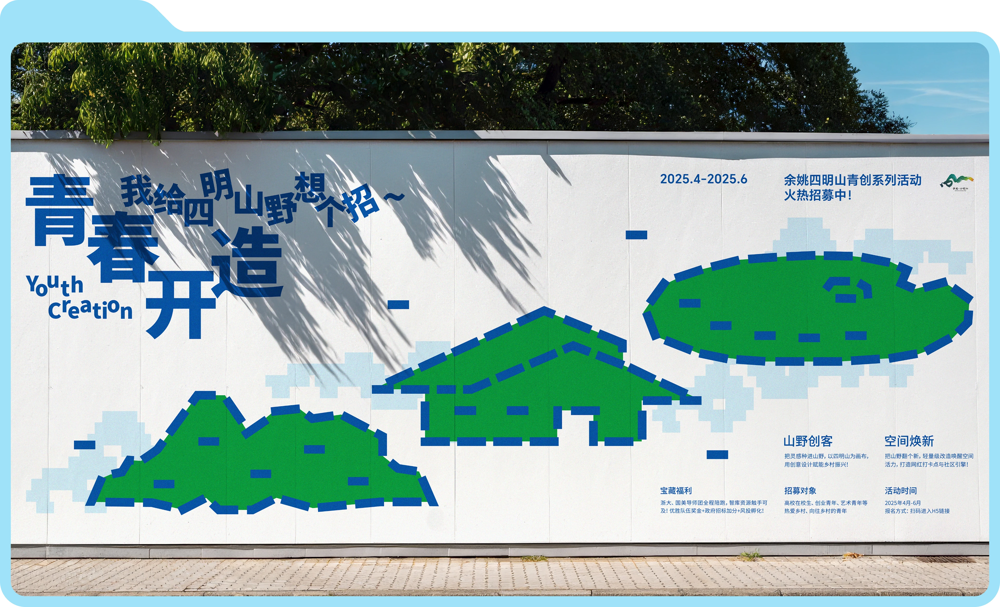
WorksAboutDylanLew
2024–2026
WorksAboutDylanLew
2024–2026

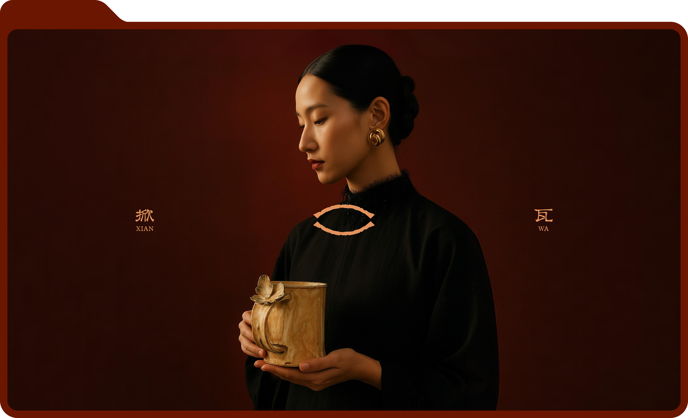


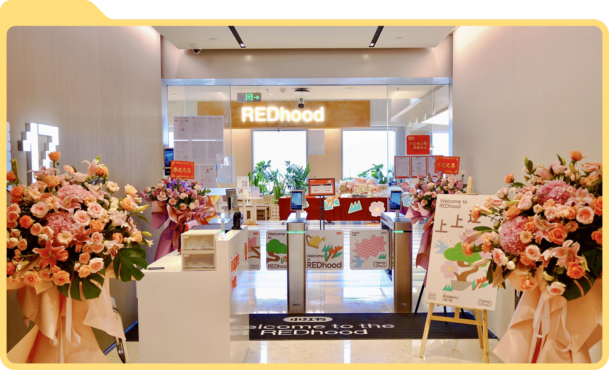
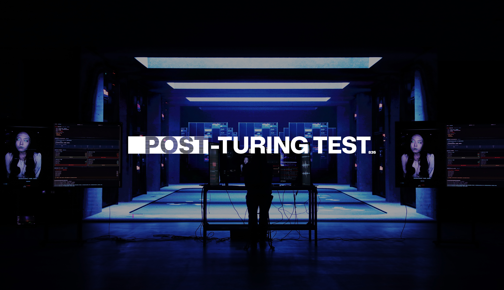
装置 / 多模态交互
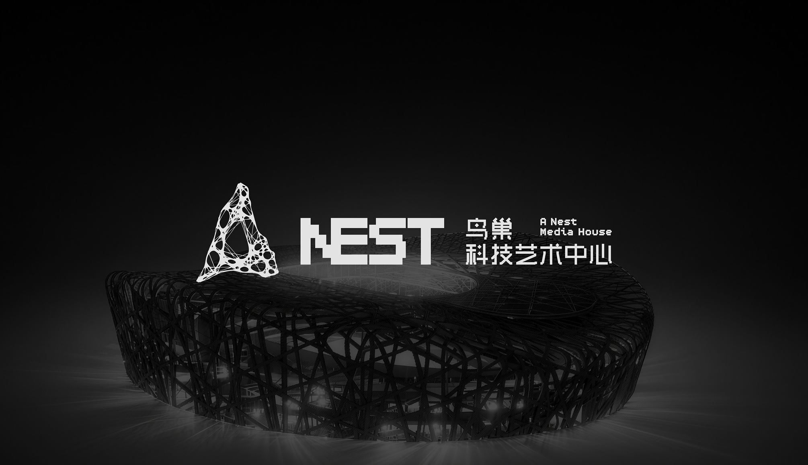
标识 / 视觉识别系统
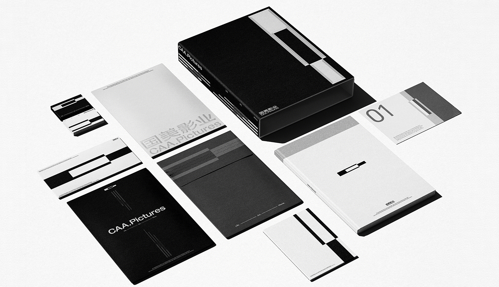
标识 / 视觉识别系统

文化活动视觉 / 周边
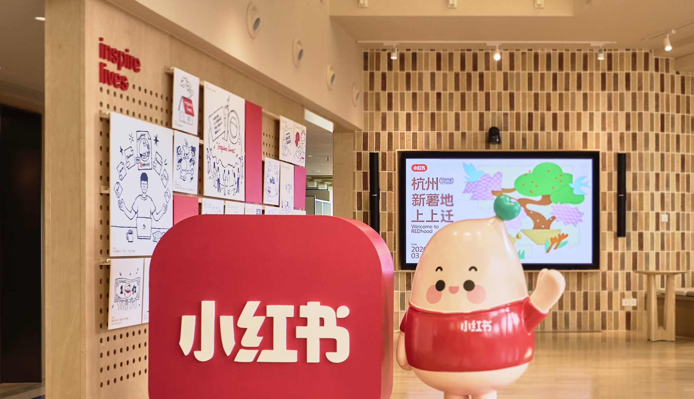
文化活动视觉 / 周边
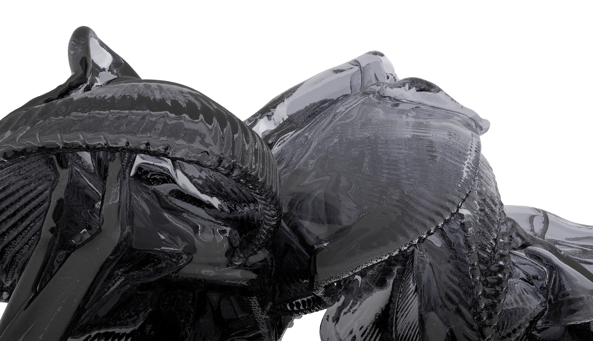
数字艺术 / 动态捕捉
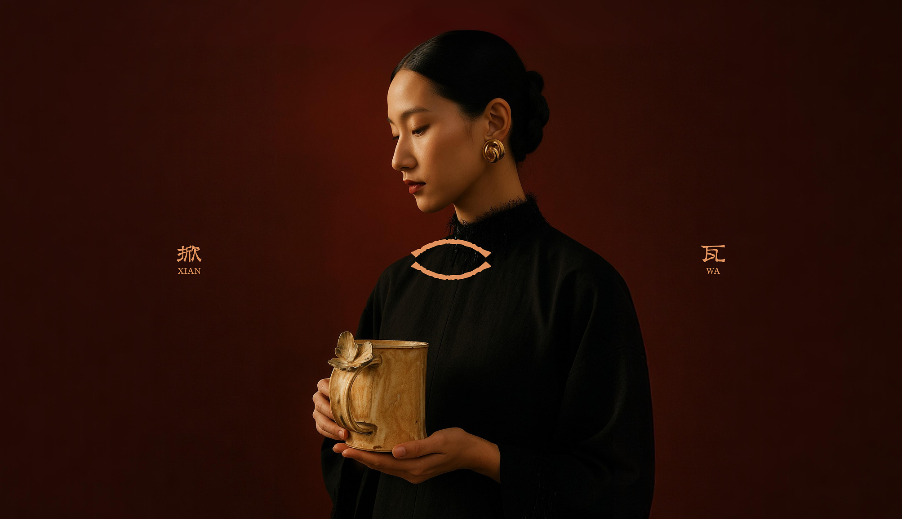
标识 / 视觉识别系统 / 包装
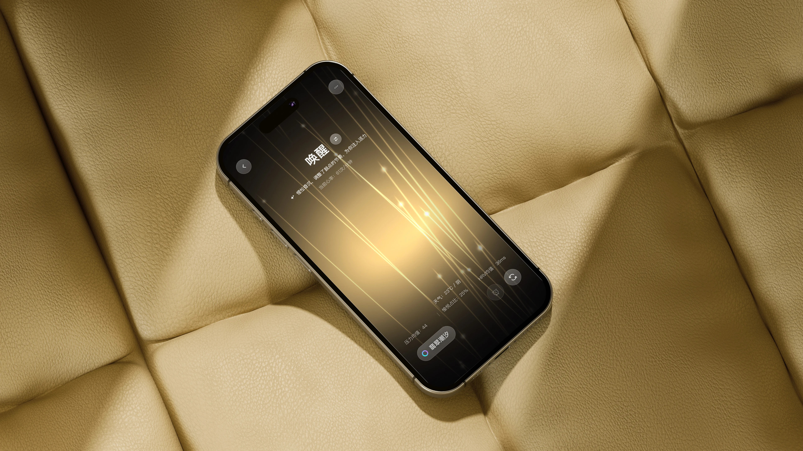
视听交互 / UI
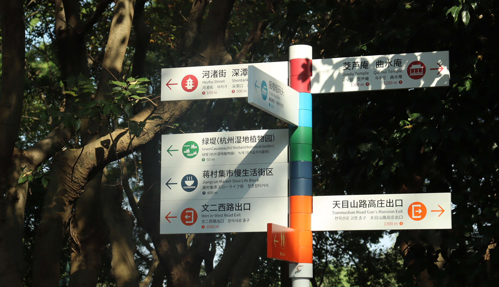
公共信息
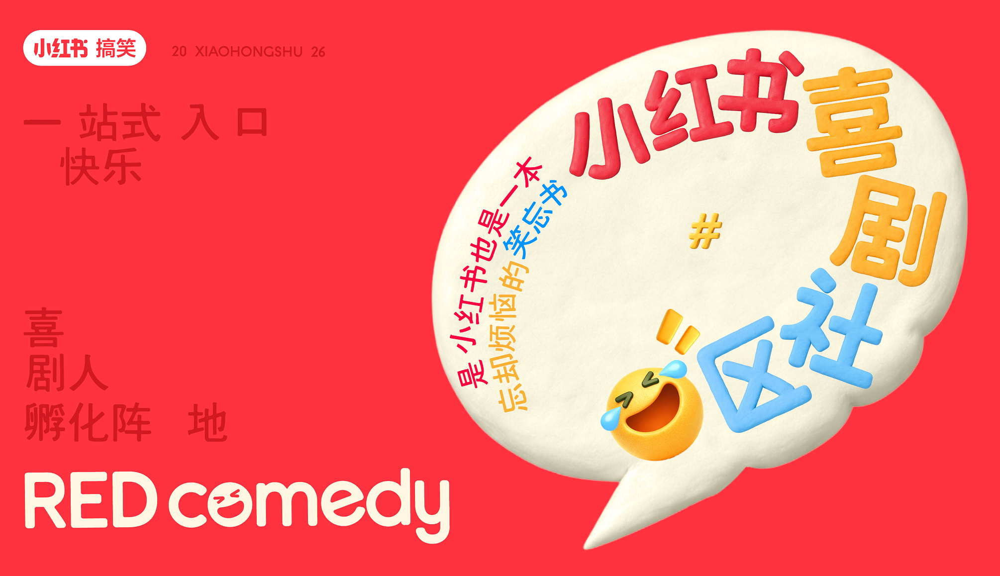
营销活动视觉 / AIGC
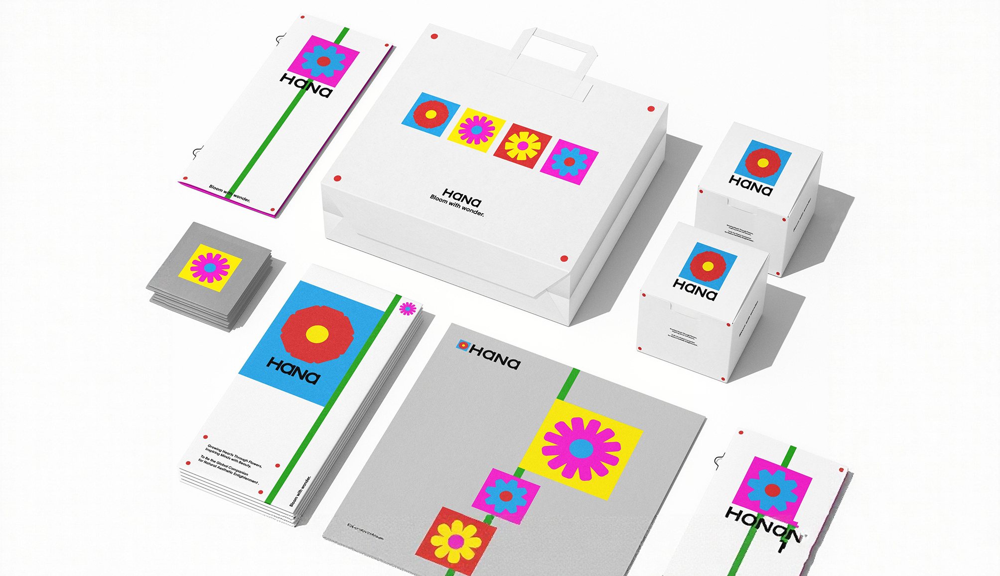
标识 / 视觉识别系统 / 包装
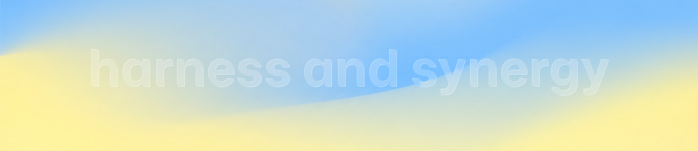
关于我
Hello, there! My name is Dylan Lew. I am an interaction and innovative visual designer (MBTI: INTJ).
My key strength lies in my experience leading and successfully delivering various branding and interaction design projects from conception to implementation.
I am currently seeking new opportunities and am eager to join an outstanding team where I can contribute my full value.
过往项目客户
鸟巢科技艺术中心、CCTV中央电视台、小红书、国美影业、CocoCat酷酷猫、掀瓦XIANWA、OCCASIO、洞天艺术、又寸新中式高定、AOI葵·塾、万象之轮影业、江西分宜电厂螺蛳小镇、四明山国家森林公园、潍坊河北商会、呼和浩特科技城AI PARK···围绕 AI Watch OS 完成睡眠提醒、AI 主动发现与改善计划、AI 任务 DIY 与“AI新鲜事”日报等多类交互场景设计。搭建多轮自然语言引导、任务确认与回退、执行反馈、信息流滚动等完整体验链路；结合液态玻璃材质、分层动效及人性化文案，探索 AI Agent 在智能穿戴设备中的主动服务方式与人机沟通体验。
独立完成“AI Sphere”及“运动健康助眠音乐空间”的动态视觉设计与原型开发。使用 Three.js、WebGL、GLSL 等技术构建内部流体波带、边缘光晕及音频呼吸反馈；面向多模式设计差异化音乐可视化，将音频能量与频率变化映射至粒子、波纹、明暗、缩放和地形起伏，形成随声音平滑响应的实时视觉体验。
根据参考图、切图素材及体验目标拆解视觉层级、运动规律与交互状态，将复杂动效转化为可执行的前端方案。针对长文本溢出、固定层与滚动层冲突、跨尺寸形态切换、玻璃材质还原及动画状态错位等问题进行专项审查，建立“初始状态—过渡过程—最终状态—完整交互链路”的验收方法，保障原型还原度与运行稳定性。
运用 Codex 参与参考视觉分析、技术方案生成、React/TypeScript 原型开发及迭代复盘，形成“参考分析—动效拆解—状态机建模—前端实现—视觉验收—版本沉淀”的创意开发工作流。将项目中的高保真原型还原、多轮对话建模、跨尺寸界面切换、滚动边界及视觉自检经验沉淀为自定义 Skill“基于原型美术的前端交互开发与自我审查”，增强复杂交互项目的复用性与交付稳定性。
参与小红书平台内外多个重要项目的主视觉设计，涵盖 2026 年 CNY 项目、明星入驻、直播活动、文创周边设计等多元场景。独立完成并成功输出创意方案，包括“杭州新职场搬迁仪式主视觉设计”“REDcomedy喜剧社区主视觉设计”、“双旦跨年直播间视觉设计”、“春节档-马上开场资源位设计”、“成龙入驻小红书资源位设计”、“八蚬子过大年动态设计”、“86小红书日动态设计”等项目。
负责与团队成员及需求方进行深度沟通，精准洞察项目视觉风格定位与用户核心需求。通过专业设计能力，打造富有吸引力与传播力的视觉内容，推动项目高效落地，确保达成既定目标。
密切关注 AIGC 领域的最新发展动态，深入研究并比较国内外多种 AI 工具的适用性。在完成创意方案的基础上，积极运用 AIGC 工具优化工作流程。总结形成了 AIGC 工具介入下的创意工作流程。使用 Claude Code 搭建工作流协助开发 AI 助手功能。
协助完成新疆阿克苏“都护臻品”区域品牌形象及包装设计和杭州西溪国家湿地公园科普视觉设计及导视系统设计。负责包装设计提案产出，延续品牌视觉体系与应用规范，产出不同规格与尺寸的包装视觉以及展示图，根据规范制作导视牌、信息排版与工艺标注。
实地考察道路分布，与施工方对接确定导视系统布点位置，校对导视信息，确保方案落地效果，最终通过模件设计使项目返工预算控制在理想范围内，根据设计规范产出不同导视系统的制作文件。
2026｜Design360°作品转载个人作品 / 媒体
2025｜戛纳世界电影节最佳虚拟现实（短片）小组作品 / 金奖
2025｜厦门国际动漫节-金海豚奖“虚拟现实（VR）数字艺术作品小组作品 / 金奖
2025｜中国金鸡百花电影节第四届金鸡XR影展小组作品 / 入围
2026｜好莱坞短片电影节小组作品 / 荣誉提名
2023｜Graduate360°年度毕业设计-TOP100（科技融合类）小组作品 / 入围
2022｜中国包装创意设计个人作品 / 铜奖
2021｜中国包装创意设计个人作品 / 佳作奖
2021｜互联网创新创业大赛个人作品 / 银奖
2026｜《东方既白 · 陈岩个展》2026年第61届威尼斯双年展圣塞维洛岛1号希腊宫 / 威尼斯 / 意大利
2026｜可能世界档案：2026国际科技艺术展国家体育场（鸟巢）科技艺术中心 / 北京 / 中国
2026｜“智汇·艺境”2026上海科技艺术作品展上海海派艺术馆 / 上海 / 中国
2026｜“智能与智识”世界艺术与科技对话分会场展览中国美术学院 / 杭州 / 中国
2025｜中国金鸡百花电影节第四届金鸡XR影展厦门佰翔会展中心 / 厦门 / 中国
2025｜世界青年科学家峰会瓯海奥体中心 / 温州 / 中国
2025｜《后人类档案》数字艺术展科技城AI公园 / 呼和浩特 / 中国
2024｜第三届全球数字贸易博览会杭州大会展中心 / 杭州 / 中国
2024｜首届中国光谷人工智能艺术大展武汉光谷空轨 / 武汉 / 中国
2026｜ACM CHI 2026（ACM计算机人机交互大会）巴塞罗那国际会议中心 / 巴塞罗那 / 西班牙
2024｜Graduate360°年度毕业设计年鉴Design360° / 广州 / 中国